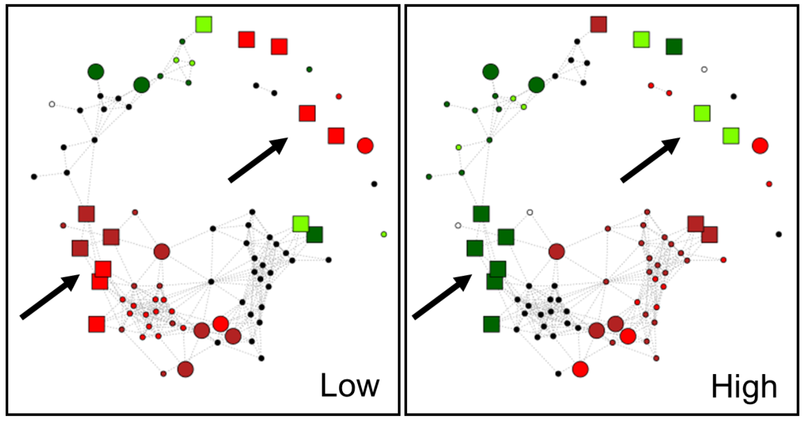

iHKG Viewer
To ensure the sharing of our data, as well as their subsequent exploitation by us or by others, we developed an interactive web viewer (called “iHKG viewer” for iron Homeostasis Key Genes - Viewer) which is publicly accessible via Github pages. Several features were developed to i) enable a dynamic exploration of the two-faced functional sub-networks, ii) enable a rapid location of any genes in the networks and iii) obtain for any gene, all the available annotations available in the public databases GRYC and CGD.
Explore iron responsive genes
In this study our aim was to identify the “key genes” required for iron homeostasis in the pathogenic yeast Candida glabrata. Referred as iHKG (iron homeostasis key genes), these genes are expected to have an activity which is important for the “homeostasis”, i.e. the property of the cells to counterbalance intracellular physiological consequences of external changes (Figure 1A). In particular, we wanted to discriminate iHKG genes from the set of all other iron-responsive (or sensitive) genes, which are genes exhibiting up- or down-regulations in response to iron fluctuations (Figure 1B). In this context, our working hypothesis was as follows. Because iHKG are involved in iron homeostasis specifically, and that homeostasis is associated with a natural resistance to bidirectional changes (low or high availability of iron), iHKG should exhibit de-regulations in situations where iron sources are respectively low and high. Other iron responsive genes should exhibit de-regulations in situations where iron availability is respectively low or high. Based on this, we defined two types of iHKG genes, referred hereafter as “Type I” and “Type II” (Figure 1C). Type I genes are those for which the de-regulation is opposite in low and high iron conditions (respectively up- and down-regulated), whereas Type II genes are those for which the de-regulation is identical in low and high iron conditions (constantly up- or down-regulated). The identification, the functional characterization and the discussion of the physiological roles played by iHKG of Type I and Type II, are the ultimate objective of this study.
Explore by Metago
Starting from the list of the 637 genes (iron responsive genes), which were found to be up- or down-regulated in at least one condition (the iron responsive genes, see previous sections), we wanted in this second part of the analysis, to infer functional sub-networks of genes. By “functional sub-networks”, we mean graphs in which genes (represented as nodes) are i) involved in a common cellular function and ii) are connected by arrows if they react similarly during iron homeostasis. On these graphs, the iHKG genes will be easily highlighted and thus integrated into a complete functional context.
F1 - Metabolism

- Nucleic acid, amino acid, fatty acid and lipid metabolism
- Post-translational modifications (including protein phosphorylation, glycosylation, structural modification and degradation)
- Carbon metabolism / energy production from respiratory and non respiratory origin
- Membrane and cell wall biogenesis
- Mitochondria functions (including biogenesis, mitophagy and functions other than redox signaling that is included in function F3, see below)
- Ribosomal biogenesis (biosynthesis, RNA processing, and translation)
F2 - Regulation

- Transcriptional regulation (including general transcription)
- Ribosome activity (including translation)
- Signal transduction
- RNA and protein fate
F3 - Redox signaling

Proteins with functions directly or indirectly linked with redox mechanisms:
- oxygen dependant enzymes, flavo-hemoproteins including Cytochrome P dependent, membrane iron reductase, NADP/NADPH dependent enzymes, metalloenzymes
Also:
- thiol and redox signaling pathways, respiratory chain components, peroxisome activity, ROS detoxification, carrier proteins, folate biosynthesis, heme biosynthesis, etc.
F4 - Transport / Trafficking
- cell exchanges between intra and extracellular compartments (directed movement of substances such as macromolecules, small molecules, ions, etc.)
- processes for internal cell trafficking
F5 - ISC synthesis and assembly

- Chemical reactions and pathways involving sulfur or compounds that contain sulfur
Others
Remaining Meta-GO for which no classification was clear or not associated specifically to iron homeostasis:
- “Unclassified” (73 Meta-GO)
- “Stress Response” (26 Meta-GO)
- “Membrane / Cell Wall” (8 Meta-GO)
- “Pathogenesis” (5 Meta-GO)